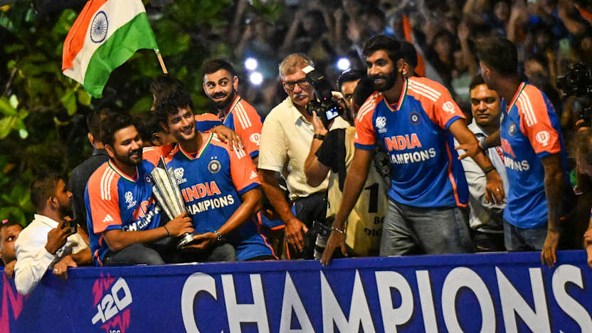

on 29th july , 2024 India Became the first team to be undefeated throughout the whole world cup campaign. Every player contributed very well throughout the tournament. with the agrresive approach India In a rematch of the ICC Cricket World Cup 2023 Final loss, India emerged victorious over Australia and booked their berth for the semi-finals. Rohit Sharma put on a show at the Daren Sammy Cricket Ground with a fiery 92 off 41 balls. A quickfire 31 runs off 16 balls from Suryakumar Yadav helped India set a 206-run target for the Aussies. Although Travis Head (76 runs in 43 balls) threatened to ruin India's party once again, wicket-taking spells from Arshdeep Singh (3/37) and Kuldeep Yadav (2/24) helped their side register a 24-run win. In the 2022 Mens T20 World Cup semi-finals, England defeated India decisively with a 10-wicket win. In 2024, India turned the tables by bowling England out for 103, winning by 68 runs at the Providence Stadium in Guyana. Batting first, crucial knocks from Rohit Sharma (57 runs in 39 balls) and Suryakumar Yadav (47 runs in 36 balls) helped India set a 172-run target for England. Defending the total, it was the spinners who drove India to a win, restricting England to 103 runs in 16.4 overs. Kuldeep Yadav and Axar Patel scalped three wickets each while Bumrah bagged two more. At the biggest stage in the finals against south africa , our boys set a taret of 176/7(20.0) , in return south africa could only get to 169/8(20.0) and we became the world champions.
